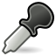

Этот сайт является основным помощником для новичков FreeCAD.
Пожалуйста, обратите внимание, что, как и FreeCAD, эти страницы находятся в непрерывном развитии. FreeCAD уже имеет много интересных инструментов для пользователя, и многие постоянно добавляются, поэтому на данный момент документация может быть не полной.
Не расстраивайтесь, просматривайте содержимое этого раздела, и если вы не можете найти необходимую информацию, не стесняйтесь спрашивать! Среди разработчиков и в небольшом, но растущем сообществе пользователей FreeCAD, кто-то безусловно может помочь вам. Вы можете оставлять комментарии, связанные с этой вики документацией на справочном форуме FreeCAD и задать свои вопросы там.
И если у вас есть информация, которую Вы хотели бы иметь здесь, то почему бы не внести свой вклад и помочь нам улучшить это руководство. Идите на страницу помощи FreeCAD, которая поможет вам начать.
Если вы хотели бы знать, как развивалась FreeCAD посетить страницу истории.
Использование FreeCAD
Введение
- Обзор приложения: Общий обзор FreeCAD
- Установка: Как установить FreeCAD на Windows, Unix / Linux или Mac
- С чего начать?: Краткий обзор доступных инструментов
- FAQ: Часто задаваемые вопросы
- Учебники по различным частям FreeCAD
Основы приложения
- Модель мыши: Использование мыши, чтобы ориентироваться в 3D пространстве
- Структура документа: Как документ FreeCAD организован
- Предпочтения и Настройка: Как можно настроить FreeCAD для ваших нужд
- Свойства: Как параметрзация объектов работает в FreeCAD
- Концепция верстаков: Как организован интерфейс FreeCAD
- Макросы: Как легко автоматизировать часто повторяющиеся задачи
- Форматы файлов: Различные форматы данных, которые может читать и записывать FreeCAD
Верстаки
-
 Модуль Arch для работы с архитектурными элементами.
Модуль Arch для работы с архитектурными элементами. -
 Верстак Complete содержит все команды и возможности всех модулей и верстаков, соответствующих некоторым критериям качества.
Верстак Complete содержит все команды и возможности всех модулей и верстаков, соответствующих некоторым критериям качества. -
 Верстак Draft содержит инструменты для двумерного черчения и преобразования их в объёмные тела.
Верстак Draft содержит инструменты для двумерного черчения и преобразования их в объёмные тела. -
 Верстак Drawing для отображения ваших объёмных работ на плоский лист.
Верстак Drawing для отображения ваших объёмных работ на плоский лист. -
 Модуль FEM обеспечивает процесс анализа Методом Конечных Элементов (МКЭ).
Модуль FEM обеспечивает процесс анализа Методом Конечных Элементов (МКЭ).
-
 Модуль Image для работы с растровыми изображениями.
Модуль Image для работы с растровыми изображениями. -  Модуль Inspection создан, чтобы дать специальные инструменты проверки объёмных тел. Он ещё в стадии проектирования
-
 Верстак Mesh для работы с триангулированными сетками (полигиональными моделями).
Верстак Mesh для работы с триангулированными сетками (полигиональными моделями). -
 Модуль OpenSCAD для взаимодействия с OpenSCAD и восстановления истории моделей CSG.
Модуль OpenSCAD для взаимодействия с OpenSCAD и восстановления истории моделей CSG. -
 Модуль Part используется для работы с деталями САПР.
Модуль Part используется для работы с деталями САПР.
{kind=link}
-
 Верстак Part Design Для создания деталей из эскизов
Верстак Part Design Для создания деталей из эскизов -
 Верстак Path используется для генерации G-кодов управления станками и 3D-принтерами. Появился лишь в версии 0.16 и находится на ранней стадии разработки.
Верстак Path используется для генерации G-кодов управления станками и 3D-принтерами. Появился лишь в версии 0.16 и находится на ранней стадии разработки. -
 Верстак Plot даёт возможность редактировать и сохранять выходные графики, производимые другими модулями и инструментами.
Верстак Plot даёт возможность редактировать и сохранять выходные графики, производимые другими модулями и инструментами. -
 Модуль Points создан для работы с облаками точек.
Модуль Points создан для работы с облаками точек. -
 Модуль Raytracing используется для для рендеринга с помощью программ трассировки лучей.
Модуль Raytracing используется для для рендеринга с помощью программ трассировки лучей.
-
 Модуль Reverse Engineering должен дать Вам специальные инструменты для превращения многогранников/тел/сетей в параметрические объекты FreeCAD. Пока в стадии разработки.
Модуль Reverse Engineering должен дать Вам специальные инструменты для превращения многогранников/тел/сетей в параметрические объекты FreeCAD. Пока в стадии разработки. -
 Модуль Robot предназначен для изучения движений роботов.
Модуль Robot предназначен для изучения движений роботов. -
 Верстак Ship предназначен для работы с водоплавающими судами, которые создаются по заданной геометрии.
Верстак Ship предназначен для работы с водоплавающими судами, которые создаются по заданной геометрии. -
 Модуль Sketcher для работы с эскизами с геометрическими ограничениями.
Модуль Sketcher для работы с эскизами с геометрическими ограничениями. -
 Верстак Spreadsheet предназначен для создания и манипуляции данными в электронных таблицах.
Верстак Spreadsheet предназначен для создания и манипуляции данными в электронных таблицах.
-
 Центр запуска позволяет быстро перейти в один из наиболее распространённых верстаков.
Центр запуска позволяет быстро перейти в один из наиболее распространённых верстаков. -
 Верстак TechDraw представляет собой более продвинутый и богатый возможностями наследник верстака Drawing
Верстак TechDraw представляет собой более продвинутый и богатый возможностями наследник верстака Drawing -
 The Test framework is for debugging FreeCAD.
The Test framework is for debugging FreeCAD. -
 Модуль Web предоставляет окно браузера на месте трёхмерного вида внутри FreeCAD.
Модуль Web предоставляет окно браузера на месте трёхмерного вида внутри FreeCAD.
Сторонние верстаки
Опытные пользователи расширяют FreeCAD с помощью различных пользовательских сторонних верстаков, которые не интегрированы в исходные коды FreeCAD (пока!), но легки для установки в существующую установку FreeCAD. Смотрите здесь обзор уже существующих верстаков. Относительно инструкций по установке этих верстаков справляйтесь по учебнику Как установить дополнительные верстаки.
Макросы
Опытные пользователи написали различные макросы для улучшения FreeCAD дополнительными возможностями, относительно списка макросов смотрите страницу рецепты макросов. Насчёт инструкций по установке макросов смотрите учебник Как установить макрос.
Ссылки
- Список команд: Полный список доступных страниц помощи по командам FreeCAD на русском языке.
Помощь в Интернет
Это официальная FreeCAD онлайн помощь. Пожалуйста, обратите внимание, что вся справочная система в настоящее время на стадии разработки. Она будет использоваться для создания файла .CHM, которые будут распределены с бинарными пакетами FreeCAD. На данный момент на сайте помощи приведены некоторые из наиболее полных описаний.
Подробнее
- Опытные пользователи для продвинутой настройки и использования FreeCAD
- David очень недорогая система 3D сканирования, которая уже может хорошо работать с FreeCAD
- Архитектура документооборот : пример того, как может применить FreeCAD в проектирование архитектуры...
- Если вы хотели помочь FreeCAD, зайдите на страницу Помощь FreeCAD .
- В FreeCAD Community Portal перечислены проекты, сделанные членами сообщества FreeCAD.
- Не понимаете термин или фразу, используемый в FreeCAD? Попробуйте Словарь .